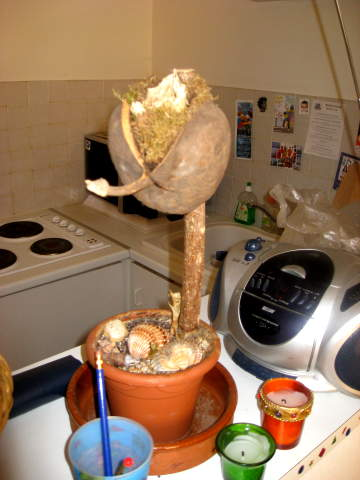

I didn't plan on going to Montpellier initially. I figured Paris would be nice to see while I was in Europe, so I would fit in about 5 days there. Then I decided to see friends in Lille, so it'd be 4 days in Paris. Then I chatted with Vanessa from Montpellier, who really wanted me to visit her too. She said she'd make me crepes! So there went another day from Paris. I met Vanessa first in Dublin, and we became good friends there prior to my visit to her hometown. Just to be clear, couchsurfing is a relatively innocent activity, so don't think I had other intentions past just making a new friend and being shown around. She never made me crepes (grrrr), but based on the wonderful time I had in Montpellier and the not so wonderful time I had in Paris, I don't regret it one bit. She later proposed to me too. About the picture, Montpellier's center is called the "Comedy". People in Montpellier are fond of jokes, so this is appropriate.
Here's another shot of the Comedy, along with its mossy fountain.
Montpellier's children were stored here in this carousel when not in school.
So I met up with Vanessa, and she showed me what touristy things Montpellier has to offer. If a European city wants to be touristy, it needs to start with a sculpture of a soldier on a horse, as shown here.

If a French city wants to be touristy, in addition to the mounted soldier statue, it needs an arch too.
Okay, now they're just showing off.
France is a relatively secular country compared to Italy. Every so often Jesus pops up and tries to make you feel guilty. Here he's following us around hopping on his crucifix-shaped pogo stick.
This church reminds me a little of Notre Dame. Could Montpellier be trying to emulate Paris? I hope not. Vanessa had to go finish up something at work (she's a teacher), so I was left to wander alone for a bit.
This picture was taken much later, obviously, but it's a touristy building shot so I grouped it here.
Here's a cool sculpture in a little flower garden I walked by.
The guy playing white, wearing the light blue shirt, is going to win. The guy playing black, on the far side of the board, is trying to figure out how to save his king. He'll forfeit in the next turn or two. This was interesting to watch, but the best part about it was the smooth jazz playing in the background while they contemplated their moves.
The famous Fabre museum in Montpellier. Vanessa said that I should go here. The paintings were nice and big and stuff, but after the Louvre, I had my fill of museums for this trip. I paid the admission fee and briskly wandered around looking for modern art, which I'm usually in the mood to look at despite being tired of museums.
I took a picture of this painting to demonstrate the type of art at the Fabre museum, and to see how well I could eliminate glare. I was a bit bored in this museum. Just then, I heard screaming from somewhere. I was excited and started to run around like a fool hoping to see a riot or some dramatic screaming piece of artwork.
Through a window, I saw what looked to be a bunch of mad scientists, like Brent Spiner's character in Independence Day.
These guys were obviously students. I was told beforehand that Montpellier is a big college town. In fact, there are a lot of American exchange students that pass through here. Anyway, that did not explain why these kids were running around screaming in white coats decorated with graffiti. Note the hand prints on one dude's butt.
Here's another one jumping in the fountain with his raft.. a completely submerged raft, resulting in a soaked college student. It was fairly warm in Montpellier, which is on the south border of France, not far from Spain, so this seemed refreshing at the time.
Here lots of them are jumping up and down singing French songs and chants. Apparently this whole ordeal is an initiation for the new students. Also known as hazing. I didn't see any alcohol though. I showed this picture to other French people, who eventually told me what this all was, and apparently they all have gone through this at some point. They recognized what was going on instantly.
Vanessa returned and said she needed to find a gift for her child, Matiss, in the toystore. This was the "death by cop" section in the toystore. We were looking for things having to do with music and singing. She seemed interested in karaoke stuff and maybe a keyboard with a drumpad. She was too short, so I had to help her grab that from the top shelf.

Vanessa and I picked up Matiss from school and took this greencard shot. There's more pictures of Matiss later. We had a full photo shoot. Matiss loves cameras.
We met up with two of Vanessa's friends, Saida, a business consultant, and Smahane, a biologist. From left to right, Matiss, Vanessa, Saida, Smahane, Scott.
It was Matiss's birthday, so Saida gave Vanessa this book as a gift. It was a book about the children of the world. Unlike in America, this book was rather explicit about things it wanted to explain.
I felt it appropriate for Smahane the biologist to show the page that explains what test tube-babies are. Smahane was very funny. She didn't speak English perfectly and was very self-conscious about it, but I understood her fine. However, like many in Montpellier, she liked to tell me jokes, and I tried to understand the punch line. I think something was lost in translation, but I loved watching her try to tell jokes. She didn't get my joke either though. I'll have to come back one day with a joke in French, to redeem myself.
t
I had a very peaceful stay at Vanessa's house. Matiss slept like a rock and I had a rather large comfortable bed. I took a picture of this interesting African mask she had hanging on a wall.

Vanessa was away from Montpellier for a bit and someone was supposed to take care of her prized plant. As you can see, it's dead, but it still made for a priceless picture. Vanessa was very sad about my departure. The morning I was about to leave, she had very sappy music playing, and when I saw her online later, she pleaded for me to come back and get married.
Matiss's photo shoot
Back